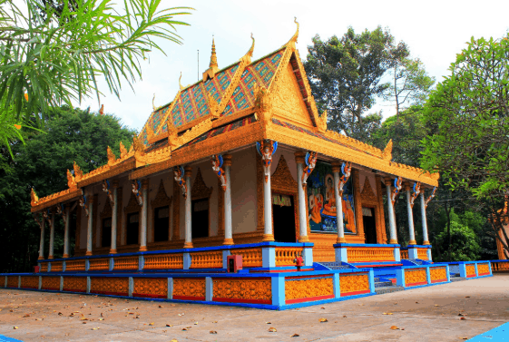
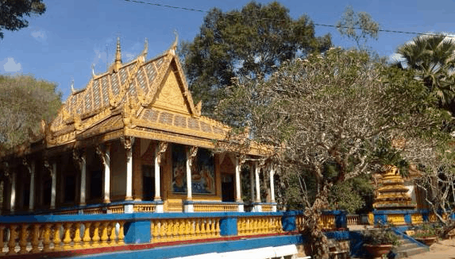
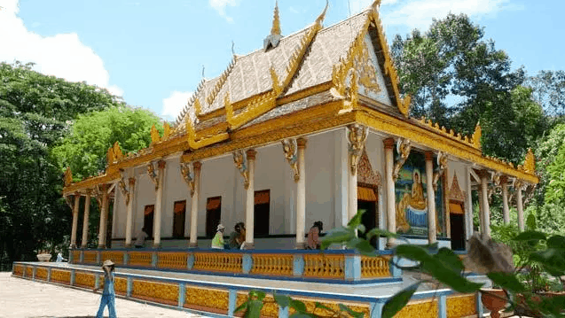

Chùa Dơi còn gọi chùa Mã Tộc (hay chùa Mahatúp) nằm bên đường Văn Ngọc Chính (có bảng chỉ dẫn) thuộc Phường 3, thành phố Sóc Trăng. Sở dĩ có cái tên đặc biệt này là vì chùa là ngôi nhà của những bầy dơi đông đúc. Ngôi chùa là không gian văn hóa duy nhất thờ Phật Thích Ca của cộng đồng dân tộc Khmer Nam Bộ tại tỉnh Sóc Trăng.
Chùa Dơi chiếm vị trí quan trọng trong tâm linh người Sóc Trăng (ảnh ST)
Theo thư tịch cổ còn lại có ghi chép: Chùa được khởi công xây dựng vào từ năm 1569, cách nay đã hơn 440 năm. Ban đầu, chính điện của chùa chỉ được xây dựng bằng tre lá, sau đó được xây lại bằng gạch, mái lợp ngói. Năm 1960, chùa được sửa chữa lớn ở chánh điện và cho đến khi có được vẻ khang trang đẹp đẽ như hiện nay, chùa đã trải qua nhiều lần trùng tu tôn tạo.
Ngôi chùa trầm mặc trong màu xanh cây cối (ảnh ST)
Chùa Dơi là một tổng thể kiến trúc gồm có: Ngôi chánh điện, Sala, nhà hội của sư sãi và tín đồ, phòng ở của sư sãi và trụ trì, các tháp để tro người chết, phòng khách… Toàn bộ các công trình toạ lạc trong một khuôn viên rộng có nhiều cây cổ thụ, diện tích khoảng 04 hecta.
Kiến trúc nhuốm màu văn hóa Khmer (ảnh ST)
Chùa Dơi ở Sóc Trăng là nơi tiến hành các nghi lễ của tăng ni phật tử thành phố trong năm. Kiến trúc Khmer độc đáo cùng những bí ẩn được giấu kĩ tại ngôi chùa này đã kéo chân hàng vạn khách du lịch mỗi năm. Bạn đã sẵn sàng cho chuyến “thám hiểm” ngôi chùa độc đáo bậc nhất Sóc Trăng này chưa?